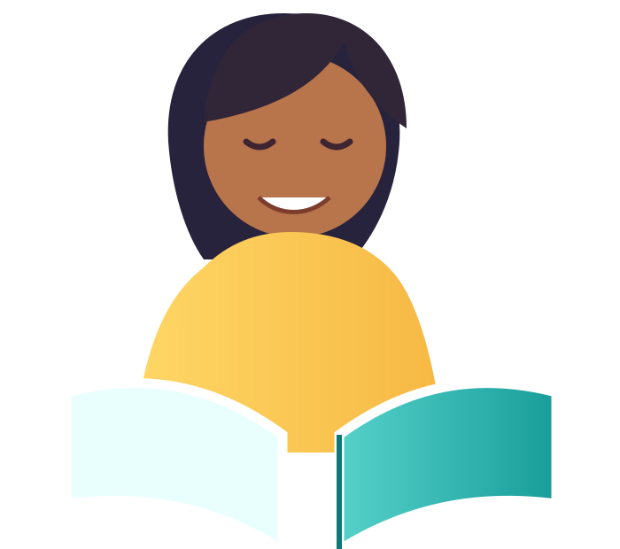

A safe place to read, think, and grow
Read.Think.Grow!
An interactive literacy hub designed to build reading confidence, lower the affective filter, and help every fourth-grade English learner shine.

I can understand
any text!
any text!
Think deeply
Share ideas
EngagingActivities
BuildConfidence
ThinkCritically
CelebrateCulture
Powered byTechnology
Choose your path
Learning that feels possible
Start with one small challenge. Practice at your own pace and try again.
Vocabulary Lab
Match words, pictures, context clues, and meanings.
Reading Missions
Practice main idea, inference, and text evidence.
Talk & Connect
Share ideas with respectful sentence starters.
Our Stories
Read culturally meaningful texts.
Tech Studio
Create, record, explore, and explain.
Celebrate Growth
Check progress without pressure.